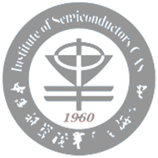

配电智能代维配电室智能代维是由北京中联创业电力工程有限公司（中联电力）首次提出的全新概念，其核心是把计算机网络技术及现代通信技术应用于配电室代维业务中，提升代维护的可靠性和效率，是把现代服务业理念应用于配电代维业务中的典范。具体做法是，建立智能化配电远程监控平台，把配电室的各种信号、运行数据通过采集及通信设备远传至中心监控室，由中心监控室对数百家、上千家配电室实行远程、集中监控，配电室当地实现“无人值班”，日常巡视、检修、事故处理工作由分区设立的专业“维护队”承担。 |
||
配电室值班机器人配电室值班机器人通过ARTU遥信采集、PZ遥测采集等模块实现值班监控功能、事件顺序记录功能、报警功能及远程浏览功能，实现人机交互协同作业，保障配电室运行正常，在提高配电室管理质量的同时降低运行成本，提高配电室的安全可靠性。配电室值班机器人的成功研发，不仅解决了电力服务市场人力资源不足的问题，对于电力需求侧管理和用户端实现节能减排也起到了积极作用。配电室值班机器人是建设智能配电网最直接的科技成果，自投入电力服务市场以来取得了良好的社会反响。 |
||
态监测（带电检测）中联电力是国内率先引进带电检测技术的公司之一，也是带电检测技术使用最成熟的公司。带电检测技术的引进和应用，不仅可以检测、解决电力设备存在的问题和隐患，而且最重要的是能保障电力用户在设备检测期间照常工作，这使得中联电力在广大电力用户当中得到了极高的称赞。中联电力提供的状态监测服务主要由三种新技术组成：超高频局放检测技术，超生波检测技术，红外成像检测技术。一般对电力设备的检测步骤：一：超生波 二：超高频局放 三：红外成像。例如：开关装置、变压器、绝缘装置、断路器、继电器、母线排设备的日常状态监测；干式变压器局部放电定位、高压电缆接头局放带电检测、高、低压开关柜带电巡检；非封闭变压器、电缆接头、非封闭母线和低压柜存在故障隐患时的放电隐患都可以通过中联电力的状态监测技术检测出来。 |
||
电力设备预防性试验预防性试验是电力设备运行和维护工作中的一个重要环节，是保证电力系统安全运行的有效手段之一。最常见的试验项目有： 交流耐压试验、直流耐压试验、局部放电测量、气体的色谱分析、空载电流测量、极化指数、吸收比、极性检查、介质损耗因数tan 8试验等。试验结果应与该设备历次试验结果相比较，与同类设备试验结果相比较，参照相关的试验结果，根据变化规律和趋势，进行全面分析后做出判断，得出设备目前的真实状态。目前中联电力已经占据北京电力检测市场近45％的市场份额，服务北京电力用户达20000余家，并且以每年15%业务份额递增，是全国电力服务行业客户数量最多，发展最快的企业。 |
||
|
首都医科大学附属复兴医院 |
北京邮电大学 |
中国人民公安大学 |
|
中国人民大学附属小学 |
中央财经大学 |
华夏出版社 |
|

中国科学院半导体研究所 |
北京科技大学 |
北京联合大学 |
公司介绍 |
|||
|
北京中联创业电力工程有限公司（中联电力），成立于2003年，注册资金2000万，是北京地区电力服务领域重点创新型企业，一直秉承技术创新，科技引领的发展模式。中联电力目前拥有员工200余人，其中博士研究生15%，硕士研究生30%，本科生50%，其他5%，高级工程师50余名。企业通过各种方式培养和造就具有敏锐的创新意识、懂技术、会管理、敬业精神强的科技管理专家人才队伍；造就了一支有较强市场开发能力的营销人才队伍；培养和建立起科学的人才创新激励机制，提高企业科技创新能力。中联电力在发展中创造条件吸收科研力量，以多种形式投入到企业创新中来，以抓好前沿性重大关键技术的攻关，带动创新性的研究应用技术开发。对引进技术在消化吸收的基础上进行二次开发，提高自主研发和创新能力。同时，按照市场经济的要求，大力开发具有自主知识产权的生产技术和有较高附加价值的名牌产品、新产品，成为进入市场的有力武器。 |
|||
研究成果 |
|||
|
在一批高学历、高素质人才的努力下，继状态监测（带电检测）技术之后，公司研发的配电智能代维管理平台于2012年底正式开发完成，目前该平台已获得中华人民共和国国家知识产权局两项新型实用专利和中华人民共和国国家版权局颁发的软件著作权证书。在北京市科委，北京电力公司等单位的大力支持下，于2013年投入使用。该平台是把计算机网络技术及现代通信技术应用于配电室代维业务中，以此来提升代维护的可靠性和效率，这也是把现代服务业理念及互联网思维应用于传统配电代维业务中的典范。基于配电室智能监控平台，结合用户需求，公司成功研制出ZL－8000B型配电室值班机器人，线上24小时不间断监控、线下快速抢修，实现监控维护一体化，为客户提供高效、安全、低耗的永久式服务，可大幅降低配电室管理成本、提高配电室运维安全，已广泛应用于政府及各大行业用电管理中。 |
|||
公司规模 |
|||
|
2009年中联电力投资搭建国家电力服务网（www.dianlifuwu.com），旨在整合行业资源、弘扬服务精神，目前是北京地区最大、注册用户最多的电力行业门户网站之一。国家电力服务网开设行业政策指导、配电室技术支持、工程项目管理等实用价值高的服务内容，为电力从业者提供专业的服务与帮助。网站下辖栏目——电工之家论坛是北京地区目前最大的电力行业从业人员服务交流平台，拥有注册会员五万余人，会员活跃度极高；同步发行电力行业刊物《电力视窗》，是国内针对电力工程从业人员阅读量最大的行业指导性刊物，发行五年之久，累计发行60余期。公司与国家电力服务网、《电力视窗》资源共享；对北京地区电力行业产生了巨大的影响力及推动力。中联电力凭借完善的综合服务能力和广泛的业务网络，赢得了广大客户的信赖和赞誉。2013年公司服务全国电力客户数量累计达30000余户，并且以每年15%的数量递增，是全国电力服务行业客户数量最多，发展最快的企业之一。 |
|||
公司宗旨 |
|||
|
面对机遇，中联电力以“科技、诚信、高效、合作、服务、环保”的企业形象，以创新发展的蓬勃朝气，敢为人先的勇气、不达目的誓不罢休的魄力，发挥公司核心专长，全面提升公司核心竞争能力，以科技创新为主，向代表最先进行业技术和最完善服务质量的目标迈进。中联电力全体人员努力把公司打造成为最有实力、影响力、凝聚力的国内一流、国际知名的电力服务公司。 |
|||